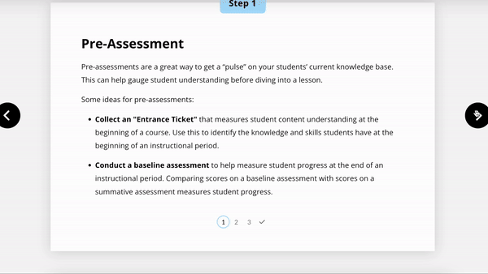

Robert Mullen
Math and AI Facilitator
Bank Street Education Center
I coach math educators, design learning experiences, and help teachers evaluate AI tools for their practice.
See my work ↓
Selected work
Bank Street Education Center
Math + AI Design Studio
I help educators build and test teacher-facing AI tools for math instruction.
See a sample stress test
Ask an AI tool to scaffold a math task, then change how you describe a learner’s needs. Compare both outputs against the learning target to see whether students still do the intended reasoning.
Curriculum design
Voronoi Diagrams and Bisectors
A high school geometry lesson using maps and perpendicular bisectors to decide which fire station should respond.
Explore the lesson
eLearning · Articulate Rise 360
Facilitating Teacher Institute
Self-paced onboarding for Prisms VR coaches leading the Teacher Institute.
Open the courseInstructional coaching
Illustrative Mathematics Observation Tool
A shared tool for documenting what happens during an Illustrative Mathematics lesson.
View the observation tool
More work
Danielson 3D: Meaningful Assessment for Instructors
An Articulate Storyline course that helps teachers use the Danielson Rubric to design assessments and decide how to act on what students show.

Differentiating Assessments
A mobile micro-course that walks teachers through designing assessment tasks at three levels of readiness.
Research on Curriculum-Aligned Video
My graduate action research examined how curriculum-aligned videos could supplement mathematics instruction, including during the shift to remote learning.
Read the thesis
About
I taught math in NYC public schools for nine years, serving as a Model Teacher and department head. I hold a master’s in Educational Technology and now support educators through the Math + AI Design Studio and NYC Solves.